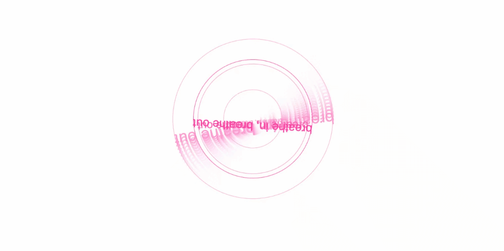
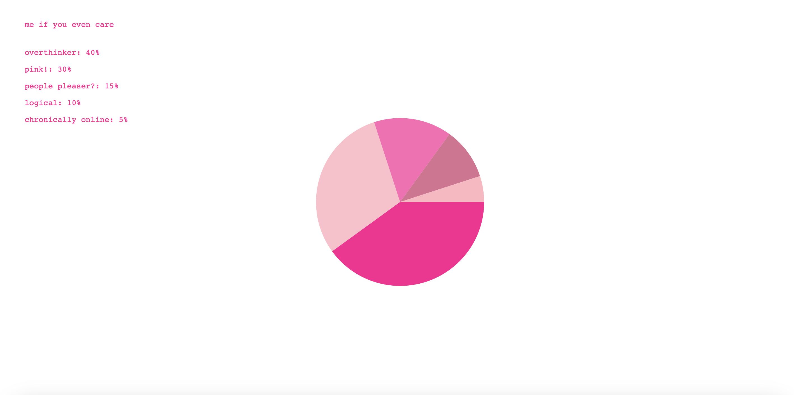

<button> Do you want to Skip to Week Four? </button>
<button> Or Week Five </button>
//may 09, 2025
//should i start going to therapy?
let affirmations = ["you're real", "i am real", "do you think i am real", "pink does look good on me"];
function anySignOfAnxiety() {
background("deeppink");
let randomAffirmation = random(affirmations);
text(randomAffirmation, mouseX, mouseY);
}
<reflection>
<p> In Week Six we explored audio and how to translate that into a generative form. We also learnt about data organisation and how to visualise this. I've used these skills to illustrate anxious patterns and how I can attempt to stop them. I'm just a girl and I'm just trying my best. </p>
<activities>
<h3> breathe in, breathe out? </h3>
<p> This sketch explores breath and rhythm through the reactive circle. When first experimenting with this exercise I felt like it was very similar to a breathing circle/ pattern. The user is able to control when to breathe in and when to breathe out with the mouse. This exercise helped consolidate the use of push() and pop(). The chaotic repitition of the lines and texts emmulates the difficulty for people sometimes to focus and breathe, especially during times of panic. </p>
<image src = "./INTMEDIAMICCIRCLES/index.html">

</image>
<h3> guys i don't know what happened last friday night </h3>
<p> This sketch is playful and fun. I've used a favourite song of mine, Katy Perry "Last Friday Night" to visualise this spiral of anxious thinking. Last Friday Night was an intentional and ironic choice. I felt like it encapsulated the girl experience, being wild and carefree. It talks on impulsivity and chaos. Certain lyrics can really reflect that anxiety when you can't remember a single thing the next morning #guilty. I've used p5 to communicate this spiral of anxious thinking with your lingering hangover and pounding head. It feels like a struggle to remember what even happened. Did I kiss him last night? I forgot. </p>
<image src = "./INTMEDIASOUND/index.html">

</image>
<h3> personality chart p5.js </h3>
<p> Here is a super random pie chart of my personality! Super cool that I can make a pie in p5.js! Feeling versatile. </p>
<image src = "/INTMEDIAPIECHART/index.html">

</image>
<p> some data dumping we did and an attempt (failed) to organise all of our items. this activity really helped us think of creative ways to organise data. </p>
<image>
<h3> some code snippets! </h3>
<p> working on adjusting the original spin text </p>
<image>
</image>
<p> adjusting the original dance! exercise to go through an array of lyrics/ phrases </p>
<image>
</image>